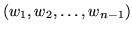

The efficient loading of the language model file requires prior
information as to memory requirements. Such information is partially
available from the header of the file which shows how many entries
will be found in each section of the model. From the back-off nature
of the language model it is clear that the back-off weight associated
with an -gram
 is only useful when
is an explicitly entry in the
file or computed via backing-off to the corresponding
-grams. In other words, the presence of a back-off weight
associated with the -gram
can be used
to indicate the existence of explicit -grams
. The use of such information can greatly reduce the storage
requirements of the language model since the back-off weight requires
extra storage. For example, considering the statistics shown in table
16.1, such selective memory allocation can result in dramatic
savings.
Table 16.1:
Component statistics for a 65k word fourgram language model with
cut-offs: bigram 1, trigram 2, fourgram 2.
Component
# with back-off weights
Total
unigram
65,467
65,467
bigram
2,074,422
6,224,660
trigram
4,485,738
9,745,297
fourgram
0
9,946,193
This information is accommodated by modifying the syntax and semantics
of the rule
<ngramdef1> = <float> { <word> } [ <float> ]
whereby a back-off weight associated with -gram
indicates the existence of -grams
. This version will be referred to as the modified ARPA-text
format.